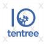
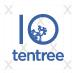

4HMT-AFRICA Project
4HMT-AFRICA consists of independent tree nursery and tree planting
service-learning projects in a number of African nations, where youth
volunteers are learning about botany, horticulture, environmental
science, forestry, and climate change, and having fun planting trees.
4HMT advocates for native and locally adapted trees, but also promotes
fast-growing trees that can meet needs within the communities including
enhanced food security, erosion control, windbreaks, heat and water
control.
Below is a picture of 4H Africa.

For example, Moringa oleifera is a miracle tree whose leaves, seeds, and
pods can provide a high level of nutrition. Mango has a further
advantage that the excess fruit can be sold into the fruit juice market,
and help people raise incomes.
While 4HMT-AFRICA started out as a climate change project, it has now
evolved into an economic development project. Please read through the
pages for 4HMT projects in Malawi, Uganda, Tanzania, Ghana, and Kenya.

 
